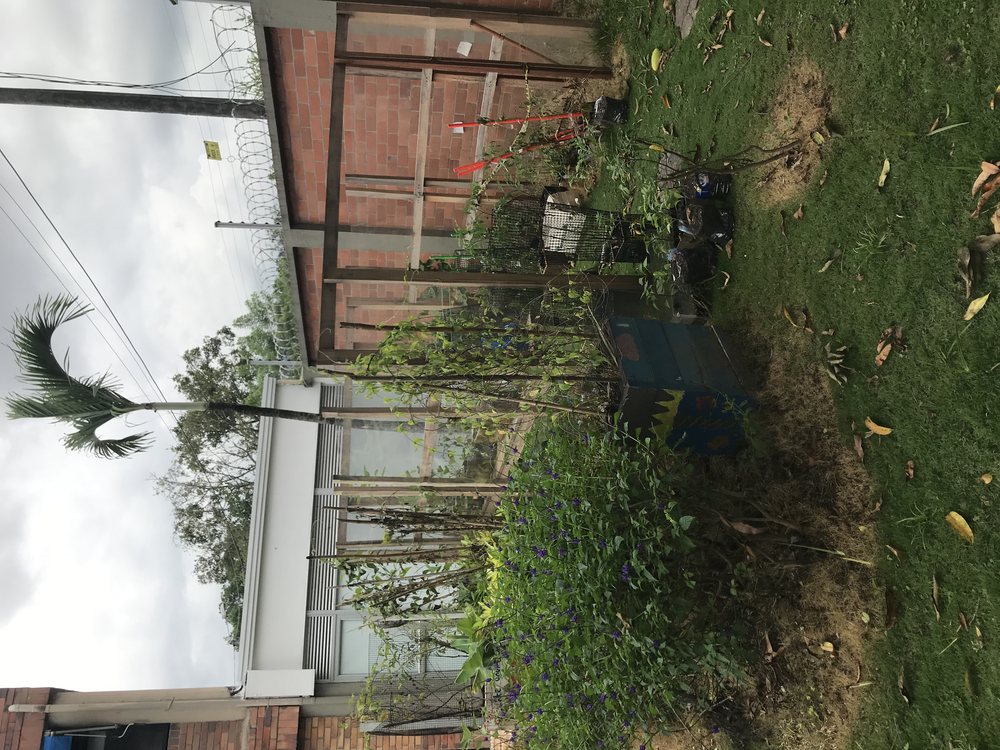
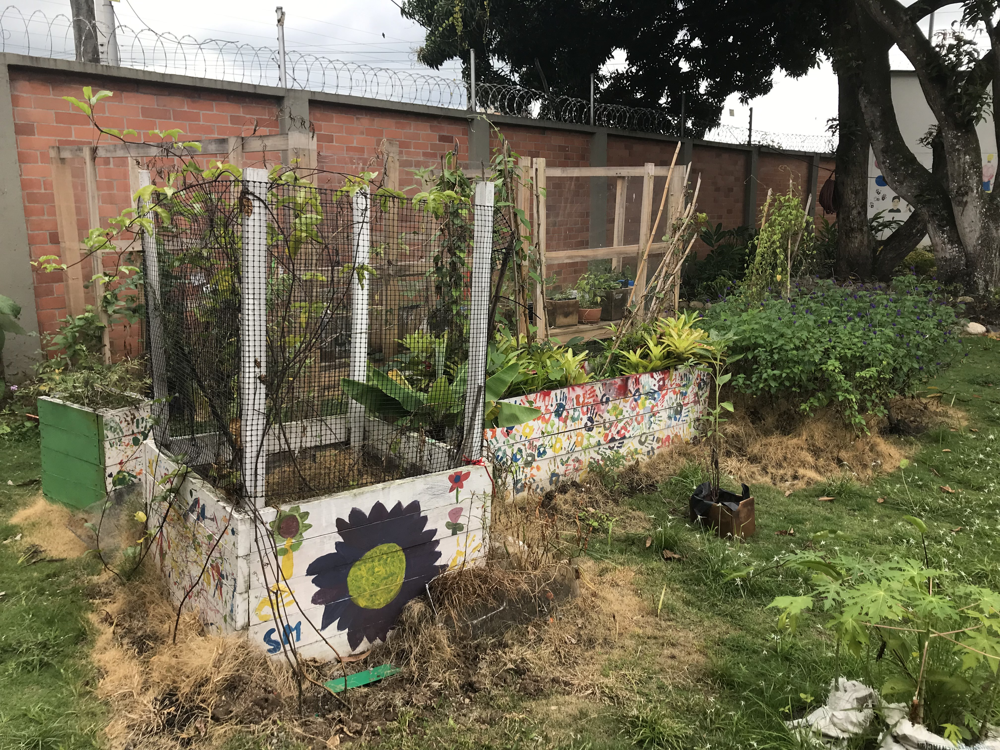

This garden started on spring of 2022 but also has a butterfly garden which started on 2019 before the pandemic. This garden is for 10th grade which has native trees. Also is a elective for high school which haves:
The idea of having this garden was by ms Amy but this garden it is pretty much cared by the students of high school.
This garden is ubicated on the green part of middleschool.
